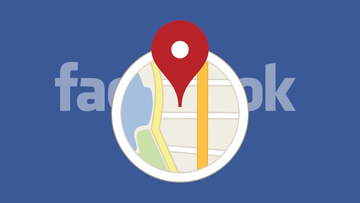

FACEBOOK TE AYUDARÁ A ENCONTRAR WIFI GRATIS

Mediante un comunicado de prensa, Facebook dio a conocer que estará disponible la función ‘Encontrar wifi’ en todos los dispositivos móviles,
después de haber anunciado su etapa de prueba hace 7 meses.A finales del año pasado, la red social había anunciado que lanzaría una función
que permitiría reconocer redes wifi que no necesitaran contraseña con el objetivo de facilitar el acceso a internet a personas que se encuentren en áreas con escasez de datos móviles.
Hasta ahora, la opción estaba únicamente disponible en unos pocos países mientras analizaban si era verdaderamente útil. Ya Facebook confirmó el éxito que obtuvo en su fase de prueba
y permitirá su uso en todos los países y dispositivos móviles con sistemas iOS y Android.
Así puedes encontrar wifi gratis en tu celular
Para activar la función en la app de Facebook, debes tocar la en el menú ‘Más’ y luego en ‘Encontrar Wi-Fi’, una vez ahí tendrás que activar la opción. Después de aceptar te aparecerá una lista de los lugares más cercanos que te ofrecen redes wifi libres.
Los lugares que te aparecerán con redes disponibles serán negocios que hayan confirmado en su página de Facebook que tienen wifi gratis. Aunque será necesario tener conexión a internet para que sirva la función, la ventaja que ofrece la compañía es la posibilidad de usarla aún con una conexión débil.
Esta función hace parte de la serie de elementos que está poniendo en práctica Facebook para hacer más accesible una conexión a internet sin importar donde estés, pero es innegable que esta misma estrategia le traerá beneficios en el apartado económico mediante las pautas de los negocios que ofrezca las redes.
En estos momentos aún no está disponible en algunos dispositivos por lo que se espera que se vaya habilitando a lo largo de la semana. ¿Qué opinas de esta nueva función? ¿Vas a usarla una vez esté disponible? Danos a conocer tu opinión en la caja de comentarios.